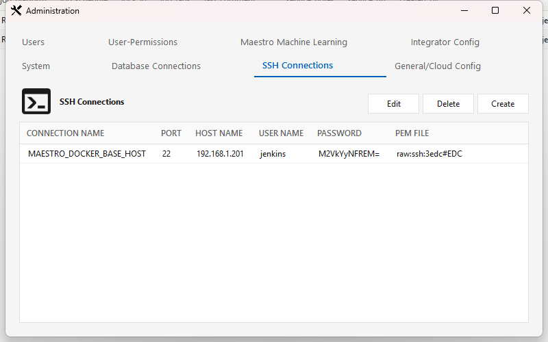
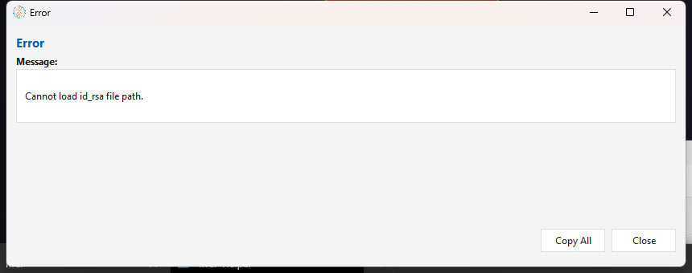
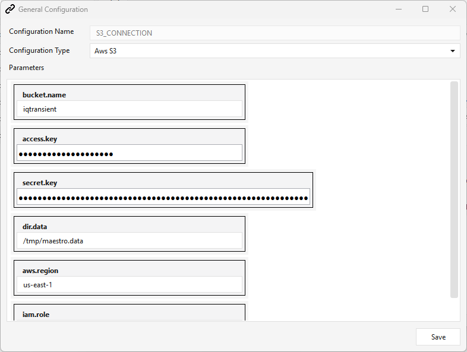
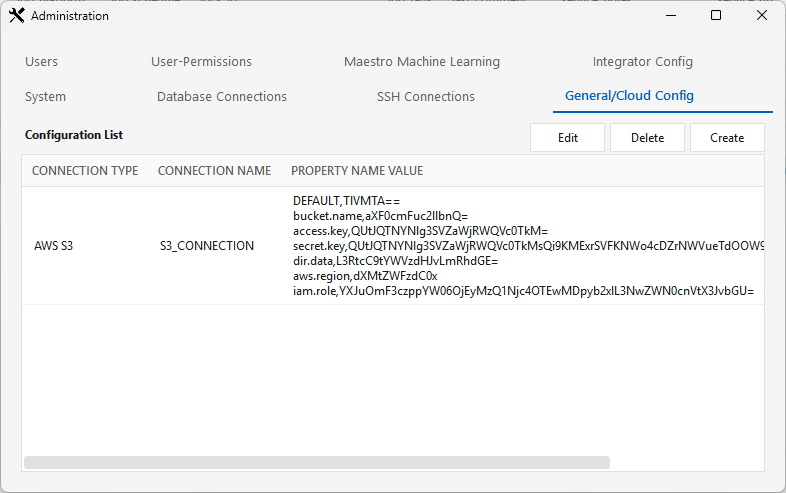
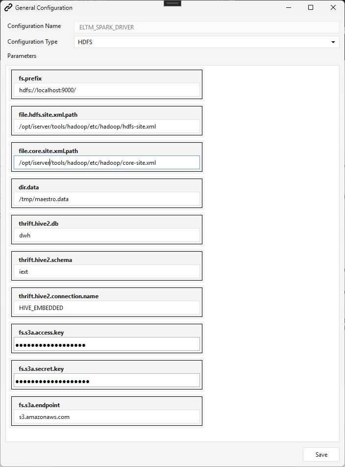

Administration & Setup¶
Part 2 of the ELTMaestro User Guide. This is the administrator's first-time setup / initialization guide. After signing in, the first thing to do is create your connections — the databases, SSH hosts, and cloud/object-storage endpoints your workflows read from and write to. Everything you create here becomes a picker in the Job editor later.
Opening the Admin Interface¶
Administration ▸ Configure Maestro Server (on the main window's menu bar). The menu item is enabled only for admin-role users — if it's greyed out, your account isn't an administrator.
It opens a tabbed window:
| Tab | Purpose |
|---|---|
| System | Server-level system settings (read-only grid + Edit). |
| Database Connections | JDBC connections — see below. |
| SSH Connections | SSH/SFTP hosts — see below. |
| General/Cloud Config | Cloud / object-storage (S3, …) connections — see below. |
| Users · User-Permissions | Accounts and access (covered later in this guide). |
| Maestro Machine Learning | Feature engineering + model config. |
| Integrator Config | Live per-integrator config editor. |
| Vendor tabs (Netezza, …) | Platform-specific settings. |
Connections — create these first¶
Three connection types, one tab each. All follow the same Create / Edit / Delete pattern; once saved, a connection is selectable by name in the Job editor.
Database connections (JDBC)¶
Tab: Database Connections. Toolbar: Create, Edit, Duplicate, Delete.
Click Create to open the JDBC connection editor:
| Field | Notes |
|---|---|
| Connection name | Your label for the connection. |
| Driver class | Pick the platform's JDBC driver class — e.g. com.amazon.redshift.Driver, net.snowflake.client.jdbc.SnowflakeDriver, org.postgresql.Driver, cc.blynk.clickhouse.ClickHouseDriver, com.firebolt.FireboltDriver, plus Oracle / SQL Server / MySQL / MariaDB / DB2 / Hive / Spark. |
| Driver jar | The installed driver jar to use. For MPP / integrator platforms you must pick the MPP_Driver_* jar — see the warning below. |
| Connection string | A JDBC URL template with $HOST / $PORT / $DATABASE placeholders — e.g. jdbc:redshift://$HOST:$PORT/$DATABASE (a TLS variant is offered for Redshift). |
| User / Password | DB credentials (password stored encrypted). |
⚠️ Pick the
MPP_driver jar for MPP / integrator platforms¶For an MPP target — Redshift, ClickHouse, Synapse, Snowflake, Exasol, Firebolt, Netezza, Greenplum, Databricks, DashDB, Yellowbrick, XtremeData — you must select the matching
MPP_Driver_<Platform>_*.jar, not the plain base driver jar. TheMPP_jar is what tells the engine to treat the connection as an integrator/MPP connection (it wires the default database/schema from the integrator'ssystem.cfg). If you pick the plain jar instead, the connection can browse metadata but you cannot create a job against it — onlyMPP_Driver_*connections are valid job targets.
Platform Driver jar to select Redshift MPP_Driver_Redshift_RSJDBC.jarClickHouse MPP_Driver_Clickhouse_JDBC.jarSynapse MPP_Driver_Synapse_JDBC.jarSnowflake MPP_Driver_SnowFlake_JDBC.jarExasol MPP_Driver_Exasol_JDBC.jarFirebolt MPP_Driver_Firebolt_JDBC.jarNetezza MPP_Driver_Netezza_NZJDBC.jarGreenplum MPP_Driver_Greenplum_PGJDBC.jarDashDB (DB2) MPP_Driver_DashDB_DB2JDBC.jarDatabricks MPP_Driver_Databricks.jarYellowbrick MPP_Driver_Yellowbrick_PGJDBC.jarXtremeData MPP_Driver_XtremeData_PGJDBC.jarThe connection's name is embedded in each job's XML — jobs reference the connection by name, so renaming or deleting a connection that jobs use will break those jobs.
Saved to the audit DB (t_jdbc).
- Duplicate copies the selected connection (handy for dev/prod variants).
Platform-specific setup (drivers, quirks, prerequisites) lives in the per-platform guides — e.g. REDSHIFT-SETUP.md, CLICKHOUSE-AUTH.md.
SSH connections¶
Tab: SSH Connections. Toolbar: Create, Edit, Delete. Used for SFTP file sources/landing and remote shell commands.

Create opens the SSH Connection editor:
| Field | Notes |
|---|---|
| Connection | Connection name/label (normalized to a proper name). |
| Host / Port | SSH host and port. |
| User Name / Password | Login user; password stored encrypted. |
| Use PEM/Key File Authentication | Authenticate with a key file instead of a password. When checked, the password is not required. |
| Use SFTP Protocol | Use SFTP for file transfer (uncheck for plain SSH). |
| RSA Private Key File Path | Path to the key file on the Maestro server when key auth is on. The ? button shows the full key-setup requirements. |
| Test | Saves the connection, then attempts a real login from the Maestro server — returns SSH Test SUCCESS or SSH Test Failed. |
| Save | Validates and stores the connection. |
(The key/SFTP choices are stored as a compact key|raw : sftp|ssh : <pem-path> setting.)
Everything the editor checks runs on the Maestro server, not your client. The key file it looks for, and the Test login, all execute on the ELTMaestro server — so reachability to the SFTP host and the key files must be correct there.
Troubleshooting SSH connections¶
"Cannot load id_rsa file path" the moment you click Create. Opening the editor runs find ~/.ssh -name id_rsa on the Maestro server to pre-fill the key path; if the server's OS user has no ~/.ssh/id_rsa, you get this error — but the editor still opens behind it, so you can continue.

- Using password auth? It's harmless — dismiss it and leave the key path blank.
- Want key-based auth? Generate a key pair on the Maestro server (
ssh-keygen) so~/.ssh/id_rsaandid_rsa.pubexist, then share the server'sid_rsa.pubwith the remote host'sauthorized_keys(the editor's ? button spells this out).
An error when you click Save. Save validates the form first — the port must be numeric, and connection name, host, user, and port are required (password too, unless Use PEM key is checked). If validation passes but the save still errors, it's almost always a duplicate connection name or a server/DB error; the message names the cause. Pick a unique name or fix the flagged field.
"Test does nothing." Test saves the connection, then performs a real SSH/SFTP login from the Maestro server to the host. If the host is unreachable or the port is blocked, the call waits until it times out, so it looks like nothing is happening — give it a few seconds and you'll get SSH Test SUCCESS or SSH Test Failed. If it fails or hangs, confirm from the Maestro server (not your workstation) that it can reach the host:port (firewall/routing), that the credentials or key are correct, and — for key auth — that the server's public key is in the remote's authorized_keys.
General / Cloud connections (S3)¶
Tab: General/Cloud Config. Toolbar: Create, Edit, Delete. This is where object-storage / cloud endpoints live — e.g. the S3 connection the Redshift file loader stages to.
Create opens the Cloud connection editor:
- Connection name (normalized to upper case).
- Connection type — pick the storage/provider type: Aws S3, Azure Blob, HDFS, LocalFS, or JDBC. The type drives the parameter rows below.
- Parameters — fill the type-specific name/value rows.
Setting up an Aws S3 connection¶
Go to Administration ▸ General/Cloud Config ▸ Create, then:
- Configuration Name — must be
S3_CONNECTION(see the name note below). - Configuration Type — Aws S3.
- Fill the parameters and Save:
| Parameter | Notes |
|---|---|
bucket.name |
The S3 bucket the loader stages files to / reads from. |
access.key |
AWS access key ID. |
secret.key |
AWS secret access key. |
aws.region |
Bucket region (default us-east-1). |
iam.role |
IAM role ARN used for Redshift COPY / Spectrum, e.g. arn:aws:iam::<acct>:role/<role>. |
dir.data |
Server-side staging directory (default /tmp/maestro.data). |

The saved connection then appears in the General/Cloud Config list (its values are stored base64-encoded):

Saved to the audit DB (t_connection_general); the parameters become $cloud.S3_CONNECTION.<param> variables usable in jobs.
Name it exactly
S3_CONNECTION. The integrator'ssystem.cfg$OBJECT_STORAGEvariable must resolve to this connection's name; the repo ships$OBJECT_STORAGE=S3_CONNECTION(redshift + sparksql + snowflake). Synapse stages to Azure Blob, so name its connectionBLOB_CONNECTIONto match$OBJECT_STORAGE=BLOB_CONNECTION. The Redshift file-loaderCOPYstages through this connection.Credentials for a Redshift load: the S3 connection above carries
access.key/secret.key/iam.role; theCOPYdefaults to the connection's IAM role (iam_role '$iam.role'), with access-key/secret as the fallback. The engine host also needs the AWS CLI installed and configured (aws configure), since the loader runsaws s3 cp/rmto stage files. See REDSHIFT-SETUP.md.(Azure Blob, LocalFS, and JDBC types expose their own parameter sets — e.g. Azure Blob:
account.name/account.key/container.name/sas.token.)
The Spark / HDFS connection (ELTM_SPARK_DRIVER)¶
SparkSQL / Spark jobs require an HDFS cloud connection named exactly ELTM_SPARK_DRIVER — it must be present before you can build or run a Spark job. (A SparkSQL job's Platform Connection dropdown is populated from HDFS connections, and ELTM_SPARK_DRIVER is the name the Spark service itself runs under — see admin.commands/mstart-spark-service.)
Create it via Administration ▸ General/Cloud Config ▸ Create, Configuration Type HDFS:
| Parameter | Notes |
|---|---|
fs.prefix |
HDFS namenode URI, e.g. hdfs://localhost:9000/. |
file.hdfs.site.xml.path |
Actual path to hdfs-site.xml, e.g. /opt/iserver/tools/hadoop/etc/hadoop/hdfs-site.xml. |
file.core.site.xml.path |
Actual path to core-site.xml. |
dir.data |
Staging directory (default /tmp/maestro.data). |
thrift.hive2.db / thrift.hive2.schema / thrift.hive2.connection.name |
Hive (thrift) catalog target — e.g. dwh / iext / HIVE_EMBEDDED. All three are overridable per-integrator via the system.cfg variables $HIVE_DATABASE / $HIVE_SCHEMA / $HIVE_CONNECTION (see note below); when a variable is unset the corresponding arg here is the fallback. |
fs.s3a.access.key / fs.s3a.secret.key / fs.s3a.endpoint |
S3A credentials + endpoint (s3.amazonaws.com) for Spark to read/write S3. |
$HIVE_CONNECTION/$HIVE_DATABASE/$HIVE_SCHEMA(system.cfg overrides). SparkSQL onstage jobs register their staged tables in a Hive/Thrift external catalog. The engine resolves the catalog connection, database, and schema from thesesystem.cfgvariables first, each falling back to the correspondingthrift.hive2.*arg on this HDFS connection (defaultsHIVE_EMBEDDED/dwh/iext) when unset. The repo ships all three insparksql/system.cfgonly (the SparkSQL integrator is the sole consumer); change them per environment via the Integrator Config tab. See SPARKSQL-SETUP.md.Enter the actual filesystem paths for the Hadoop XMLs (not the
$MAESTRO_ENGINE_HOMEvariable — this field is taken literally). On the standard image that's/opt/iserver/tools/hadoop/etc/hadoop/….

The Hive catalog connection.
thrift.hive2.connection.name(e.g.HIVE_EMBEDDED) refers to a JDBC connection to HiveServer2. Create it like any database connection: driver classorg.apache.hive.jdbc.HiveDriver, driver jarhive-jdbc-3.1.3-standalone.jar(the Apache standalone uber jar; aliasMPP_Driver_Hive_JDBC.jar, shipped via the deployment'sjdbc_list.json), and connection stringjdbc:hive2://<host>:10000/<db>— e.g.jdbc:hive2://<server_ip>:10000/default(the same URL DBeaver uses).
How connections feed workflows¶
What you create here is exactly what appears in the Job editor:
| Connection type | Used by |
|---|---|
| Database (JDBC) | The source/target of SQL and load steps. |
| SSH | SFTP file-source / file-landing steps and remote shell. |
| General/Cloud (S3) | File-loader staging (e.g. flat file → S3 → Redshift COPY). |
Connection recipes — SparkSQL & Redshift jobs¶
The exact set of connections each platform needs (and what to recreate after a fresh/destructive deploy, which wipes them). Create them in the order below.
SparkSQL jobs¶
A SparkSQL job stages source data into HDFS as Parquet and registers it as Hive external tables, so it needs three connections (a fourth if you stage via S3). Full walk-through: SPARKSQL-SETUP.md.
| # | Connection | Tab / Type | Key fields |
|---|---|---|---|
| 1 | HDFS / Spark (e.g. ELTM_SPARK_DRIVER) |
General/Cloud Config → HDFS | fs.prefix (hdfs://<host>:9000/), file.hdfs.site.xml.path + file.core.site.xml.path (actual paths on the engine host), dir.data, thrift.hive2.db=dwh, thrift.hive2.schema=iext, thrift.hive2.connection.name=HIVE_EMBEDDED, optional fs.s3a.*. Create exactly one — the engine auto-discovers it by type (first HDFS row). |
| 2 | HIVE_EMBEDDED (Hive2 JDBC) |
Database Connections (JDBC) | Driver class org.apache.hive.jdbc.HiveDriver, jar hive-jdbc-3.1.3-standalone.jar, string jdbc:hive2://<host>:10000/dwh. Name must match thrift.hive2.connection.name / $HIVE_CONNECTION (default HIVE_EMBEDDED). Used to register external tables. |
| 3 | Source(s) | Database Connections (JDBC) | One per source you ingest from (SQL Server, ClickHouse, Postgres, …) — normal JDBC connection. |
| 4 | S3_CONNECTION (only if staging via S3) |
General/Cloud Config → Aws S3 | See the S3 recipe; resolves $OBJECT_STORAGE. |
$HIVE_CONNECTION/$HIVE_DATABASE/$HIVE_SCHEMAinsparksql/system.cfgoverride the connection'sthrift.hive2.*args (details); leave them at the shippedHIVE_EMBEDDED/dwh/iextunless your environment differs.
Redshift jobs¶
A Redshift job loads flat file → S3 → COPY, so it needs a JDBC connection plus the S3 connection. Full walk-through: REDSHIFT-SETUP.md.
| # | Connection | Tab / Type | Key fields |
|---|---|---|---|
| 1 | Redshift JDBC | Database Connections (JDBC) | Pick the MPP_Driver_Redshift_RSJDBC.jar (not the plain jar — otherwise you can't create a job against it); driver class com.amazon.redshift.Driver; string jdbc:redshift://$HOST:$PORT/$DATABASE (TLS variant offered); user (e.g. rsadmin). Redshift Serverless uses the same driver/string — point $HOST at the workgroup endpoint (REDSHIFT-SETUP ▸ Running on Redshift Serverless). |
| 2 | S3_CONNECTION |
General/Cloud Config → Aws S3 | Name exactly S3_CONNECTION (resolves $OBJECT_STORAGE); bucket.name / access.key / secret.key / aws.region / iam.role / dir.data. The file-loader COPY defaults to the connection's IAM role. See the S3 recipe. |
Other non-connection notes for Redshift (one-time per environment, not wiped by a deploy):
- AWS CLI configured on the engine host (aws configure) — the loader runs aws s3 cp/rm there.
- base64 decode is native — $B64EXPRESSION uses Redshift FROM_VARBYTE(TO_VARBYTE(…,'base64'),'utf-8'); no UDF to install (REDSHIFT-SETUP §3).
Users & access¶
Users¶
Tab: Users. Toolbar: Create, Edit, Delete. (Backed by t_user.)
Delete is not supported from the UI — the Delete button returns "Not Supported." Restrict an account by lowering its role or revoking component permissions instead.
Create / Edit opens the user editor:
| Field | Notes |
|---|---|
| User ID | Username — min 4 characters; stored upper-cased. |
| Password | Min 8 characters; stored as an MD5 hash. On Edit, leave it as-is to keep the current password, or type a new one to reset it. |
| Role | Access level 0–3 (higher = more privileged). An admin-level role is what unlocks Administration ▸ Configure Maestro Server (this Admin Interface). |
⚠️ Restart required: after you create or edit a user, the dialog warns that the ELTMaestro messaging (meta-)service must be restarted before the new/changed account takes effect — see OPERATIONS.md.
User-Permissions¶
Tab: User-Permissions. Fine-grained, per-component access layered on top of the role.
- Pick a user from the drop-down.
- The grid lists each tracked component — Component Type, Component Name, and Can Access.
- Select a row and click Toggle Access to grant or revoke that user's access to that component.
(Backed by t_component_role_permission, surfaced via v_component_role_permission.)
System, config & models¶
System¶
Tab: System. Server-level settings (key/value) from t_system_settings. It's a read-only grid — select a row and click Edit to change a value (no create/delete).
Integrator Config¶
Tab: Integrator Config — a live editor for the per-integrator config files on the server (system.cfg, the get_* introspection templates, static_* lists, etc.). This is how you change integrator configuration without a redeploy.
- Reload — fetch the live config from the server into a per-file list. Use the filter box to find a file.
- Expand a file row and edit its contents inline.
- Show Edits — list just the files you've changed.
- Save — write your edits back to the live server config (a minimal, surgical save of only what changed).
This is the tab where the MPP
system.cfgadoption edits are applied.
Maestro Machine Learning¶
Tab: Maestro Machine Learning, with two sub-tabs:
- Feature Engineering — Create / Modify / Delete feature transformations (StringIndexer, VectorIndexer, QuantileDiscretizer, Bucketizer, …).
- Classification/Regression/Clustering Models — Create / Modify / Delete ML models.
These define the reusable feature transforms + models that ML steps in workflows consume.
Vendor tabs (Netezza, …)¶
Platform-specific settings tabs (e.g. Netezza → t_netezza_settings). Same pattern as System: a read-only key/value grid with Edit to change a value.
That completes the Administration & Setup guide. Next: Menus in depth · Workflows.